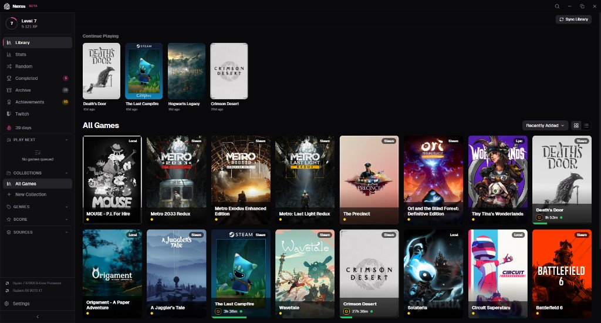
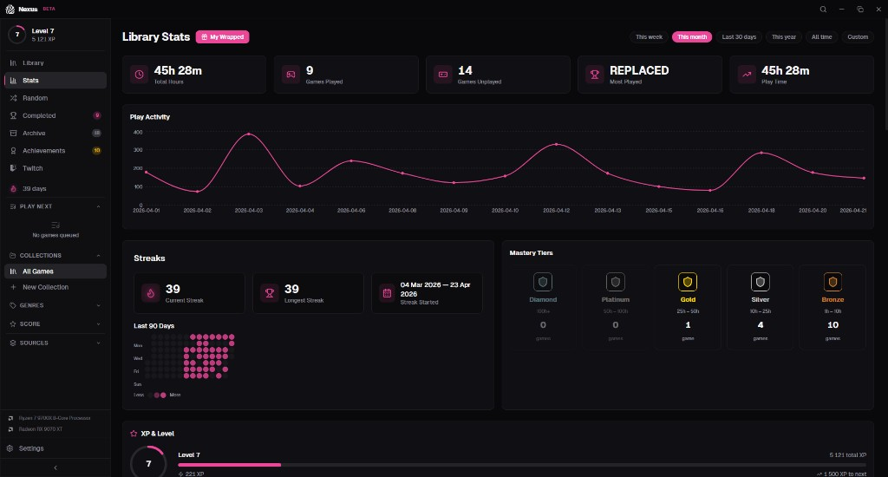
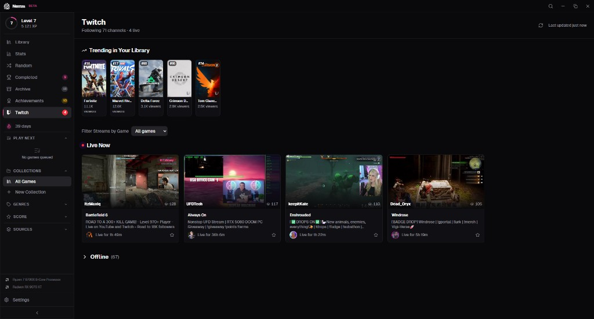

Unified Library
Steam, Epic, GOG, Battle.net, Amazon — auto-imported. Repacks and standalone titles too. One library, every game you own.
Library
Nexus unifies your Steam, Epic, GOG, Battle.net, and Amazon libraries — plus repacks and standalone titles — into a single, beautifully designed launcher built for people who actually play games.

Built for gamers
Forty-plus features designed around how people actually play — not how launchers want you to.
Steam, Epic, GOG, Battle.net, Amazon — auto-imported. Repacks and standalone titles too. One library, every game you own.
Accurate sessions across every source. Heatmaps, histograms, streaks, and per-game patterns — your habits, made visible.

StatsA cinematic year-in-review of your gaming life. Top games, genres, streaks, mood — packaged as a shareable poster card.
Earn XP from every session. Climb mastery tiers per game. Unlock dozens of native achievements as you play.
Daily streak counter with freeze protection.
Can't decide? Spin the wheel — with optional filters.
Heatmaps, histograms, return-rate charts, and patterns by month or day of week.
Auto-updating collections from rules — status, genre, play time, tags, ratings.
Live streams, followed channels, trending games, drops, and pulse badges on cards — woven through the library.
Optional encrypted backups on your own schedule.
Swap covers, icons, and hero art from the community.
Estimated completion times and time-remaining based on your actual play.
Full feature set
In motion
Three signature moments from the launcher.
Stat 01
Your sessions flow into a dashboard built for inspection — heatmaps, histograms, return rate, and per-game breakdowns by month or weekday.
Stat 02
A cinematic year-in-review built right into your library. Top games, genres, mood, hidden gems, and a 1080×1080 poster to drop in any feed.
Stat 03
Twitch is woven through the launcher — pulse badges on game cards, live streams in the sidebar, trending titles you already own, and go-live toasts.

Under the hood
A native Rust core wrapped in a React UI. Tiny install, instant launch, and your data on your disk — exactly where it belongs.
A complete Twitch overhaul. Watch live streams without leaving Nexus, get push-based go-live alerts the moment a streamer you follow starts broadcasting, browse the top clips for any game in your library, and see your Twitch watch time roll into your Stats and Wrapped. Sign-in is more reliable, and there is a brand-new diagnostics panel if anything ever feels off.
Free. No account. Local-first with optional cloud backup. Installs in seconds and gets out of your way.
Windows 10 / 11 x64 MSI ~10 MB Code-signed